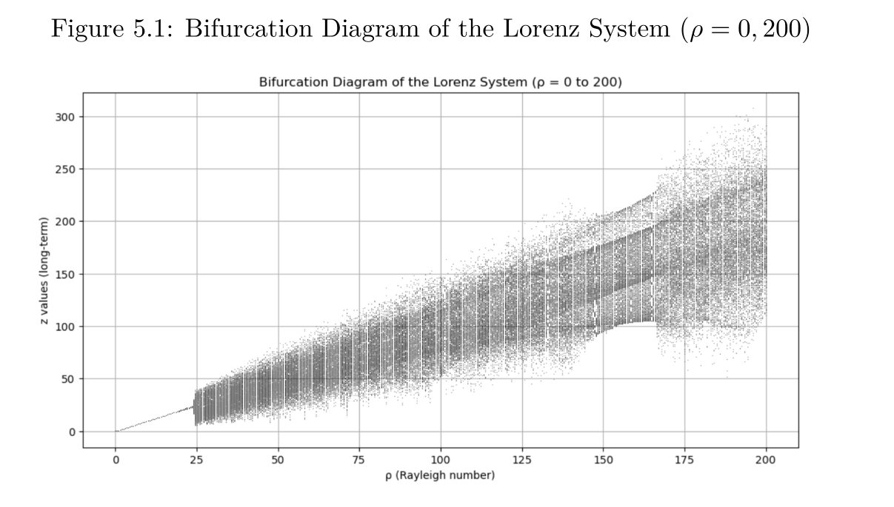
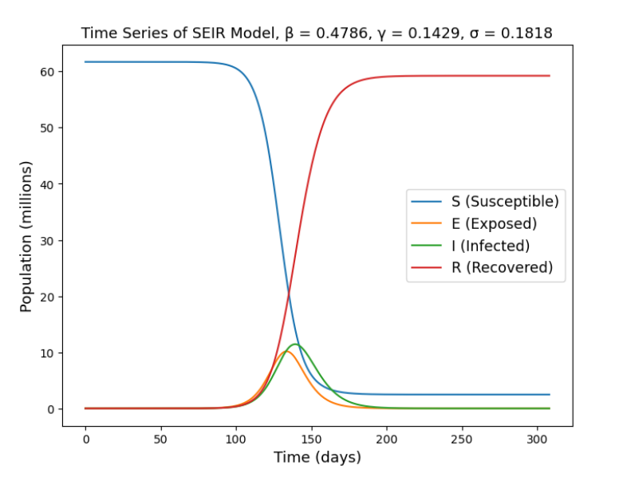
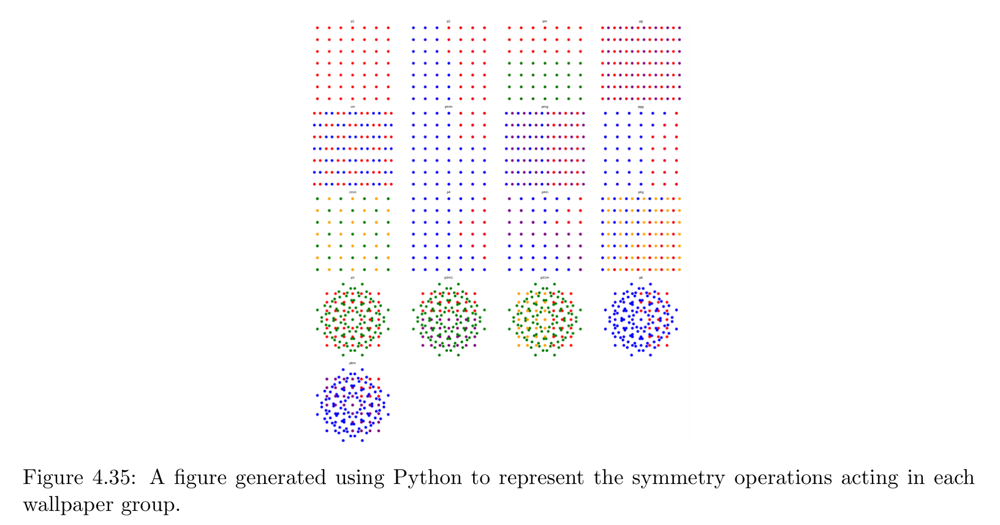

Mathematics
Killian O’Brien
May 2025
Who am I?
- Dr Killian O’Brien
- Senior Lecturer in mathematics
- Background in pure mathematics, with knowledge of applied topics
such as statistics and probability, cryptography, …
- Contact
What exactly is mathematics?
A tough question to answer! I commonly say things
like …
- The study of numbers and space.
- How to reason correctly about our numerical and geometric
descriptions of the world.
- An underlying language, essential for all the sciences.
At school/college and in university/higher
education
- At school and sixth form college you experience studying mathematics
as learning about tools that help you solve various mathematical
problems.
- In university, this broadens out to consider a huge range of tools,
and more importantly, how they are derived/invented and
how we choose the right tools to solve unfamiliar
problems.
A spectrum of applications, from very applied, to
very pure.
- Mathematical
modelling and flow analysis at Man Met, Applied Mathematics Research
at Man Met
- Bounded
gaps between the primes Terence Tao, Stanford, USA
- Long been conjectured that there are
infinitely many twin prime pairs, i.e., pairs of
integers \(n, n+2\) where both are
prime, for example, \(11,13\) or \(17,19\) or \(101,103\) or … . But no one has managed to
prove this yet.
- Zhang
(2014) proved that, two primes can be found in the range \([n, n+70,000,000]\) for infinitely many
\(n\).
- Terence Tao (and others) have since improved this situation to: two
primes can be found in the range \([n,
n+246]\), for infinitely many \(n\).
A mathematics student in UK higher education.
A typical student will be learning about mathematics through a
combination of
- Lectures,
- Tutorials/seminars,
- Computer labs,
- learning to program in languages like Python, Matlab, Mathematica,
C++, …
- At Man Met our students typically have 12 hours of such face-to-face
sessions timetabled each week.
The rest of your study time is spent
- studying and learning the lecture content,
- following the suggested reading of books and academic papers from
your courses,
- working on completing tutorial exercises and programming
problems.
Lots of this is best done together with other students from your
course.
A mathematics student in UK higher education.
Most mathematics courses in UK universities will allow students to go
on a placement year before their final year of
study.
- In 2022 I oversaw placement activity from our department of
Computing and Mathematics.
- We had 31 students on placement, from
| BSc Computer Forensics & Security
(5) |
BSc Computer Science
(6) |
BSc Computing (3) |
| BSc Mathematics (4) |
BSc Software Engineering
(11) |
MComp Computer Science
(2) |
| Greater London (2) |
North East England
(1) |
North West England
(18) |
South East England
(5) |
| South West England
(1) |
Wales (1) |
West Midlands (1) |
Yorkshire and the Humber
(2) |
| Apadmi |
Atkins |
Atom Group |
Aucoda (2) |
Audit Partnership |
| BAE Systems |
Computer Design Systems |
Home Office |
IBM (3) |
Intelliscope |
| Jumping Rivers |
Manchester United |
Matillion |
National Crime Agency |
NHS (2) |
| Pinewood Technologies |
TATA Steel |
Team Netsol (2) |
The Insights People |
TIP Trailer Services
(2) |
| TopCashback (2) |
Tyrrell Products |
VMware |
Zestia |
|
Assessment
- Mathematics students will typically be assessed through a
combination of examinations and
coursework.
- Most mathematics courses require final year students to produce an
undergraduate thesis/project.
- I am currently assessing our students’ projects. Here are some of
their titles.
- Understanding Chaos in Dynamical Systems and Chaotic Encryption
Methods
- How many different types of wallpaper are there?
- Exploring COVID-19 Pandemic Modelling and its Broader
Applications



Teaching and research interests
- Teaching experience in core pure mathematics areas
of
- Calculus,
- Linear Algebra,
- Number Theory and Cryptography,
- Group Theory and abstract algebra.
- Research
- PhD in development of algorithms in abstract algebra (Groebner bases
in polynomial ring ideals) with applications to knot theory (topology
and geometry).